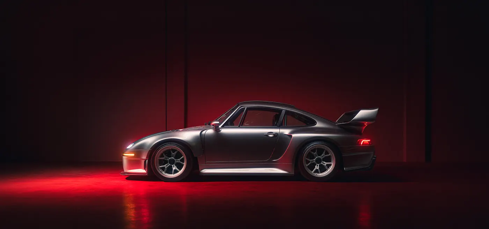

01 · Program
F-26
26examples worldwide
- Engine
- Twin-turbocharged 4.0 L flat-six, co-developed with Rothsport Racing
- Power
- 1,000 hp (Gunther Werks F-26 release, 15 Aug 2025)
- Gearbox
- Six-speed manual, rear-wheel drive
What the atelier changed
- Slantnose front, a 930 Flachbau tribute
- Carbon-fiber panels and doors
- 935-inspired high-downforce wing